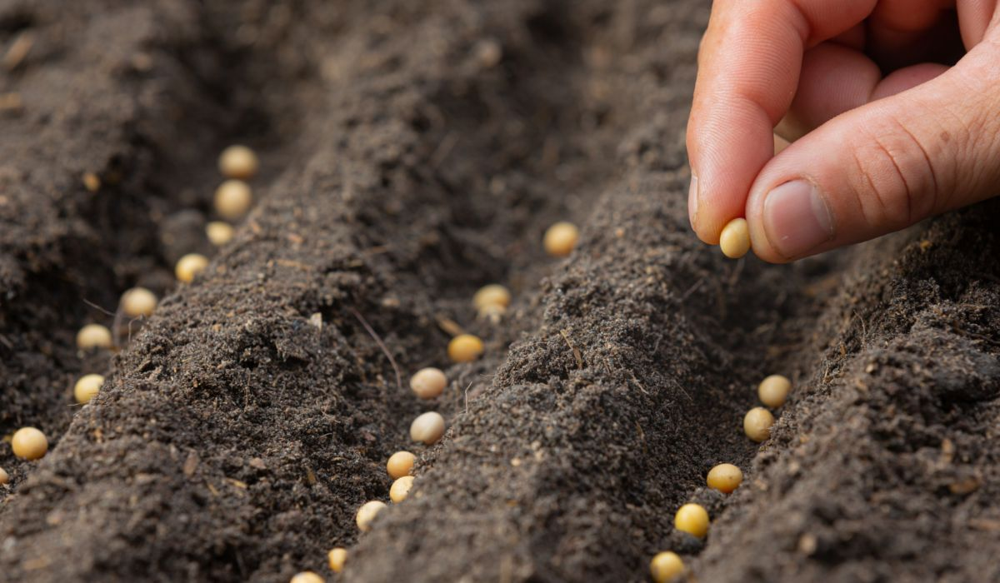
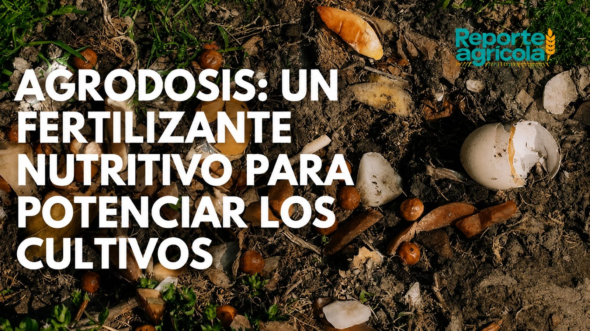
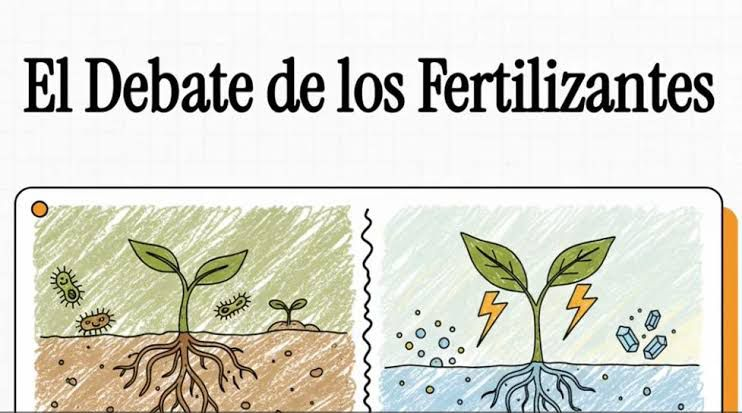
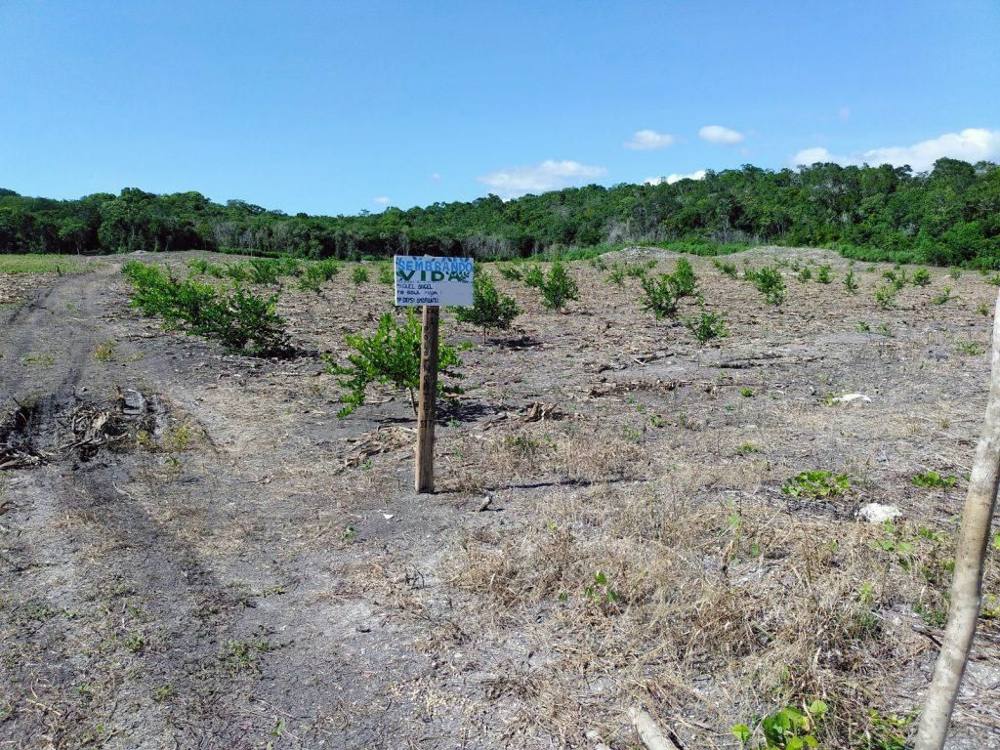
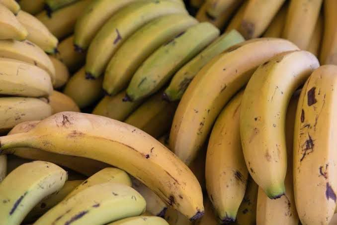
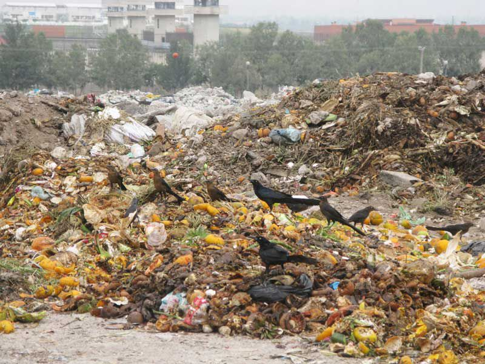
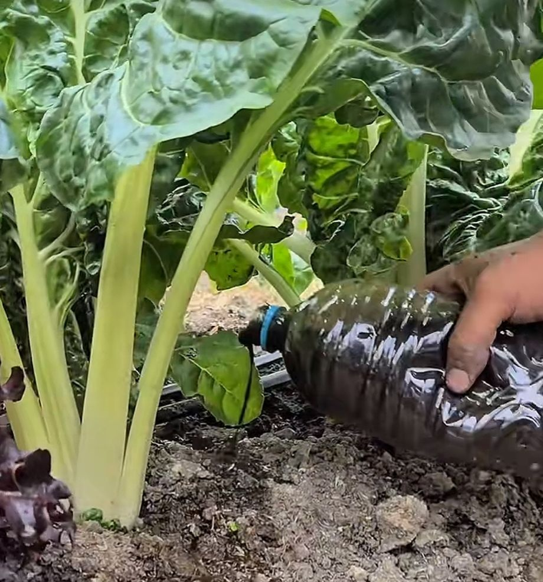
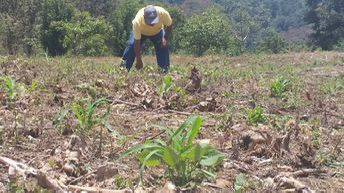

Blog



AgroDosis aprovecha el poder de los microorganismos benéficos para revitalizar el suelo, mejorar la absorción de nutrientes y fortalecer los cultivos de manera natural y sostenible.
AgroDosis es un equipo en la cual estamos enfocados en desarrollar soluciones prácticas o más factibles para un mejor cuidado de las plantas, aprovechando los distintos recursos naturales de nuestra región. Nuestro proyecto nace con la idea de innovar en el uso de desechos orgánicos, como la cáscara de plátano, para transformarlos en productos útiles y amigables con el medio ambiente.

Buscamos ofrecer un producto de calidad, con un buen servicio y precios accesibles, pensando tanto en personas con experiencia en el cultivo como en quienes apenas comienzan

Nosotros hemos desarrollado una opción orgánica y sostenible la cual aprovecha la riqueza natural que tiene Tabasco, en la que integramos la tecnología y los procesos para fortalecer la calidad de los cultivos desde la raíz.

Nos interesa fomentar una cultura más responsable con el entorno, reduciendo el uso de químicos y promoviendo alternativas más naturales.



AgroDosis aprovecha el poder de los microorganismos benéficos para revitalizar el suelo, mejorar la absorción de nutrientes y fortalecer los cultivos de manera natural y sostenible.
En AgroDosis desarrollamos soluciones orgánicas a base de microorganismos benéficos que ayudan a mejorar la salud del suelo y fortalecer el crecimiento de los cultivos. Nuestros productos contribuyen a una mejor absorción de nutrientes, aumentan la actividad biológica y favorecen plantas más resistentes y productivas de manera natural.
Nuestros biofertilizantes líquidos están elaborados con ingredientes orgánicos y procesos biológicos que apoyan el desarrollo saludable de frutas, verduras y cultivos agrícolas. AgroDosis busca ofrecer alternativas ecológicas que ayuden a reducir el uso excesivo de químicos mientras mejoran la calidad y el rendimiento de las cosechas.
AgroDosis es un fertilizante 100% orgánico elaborado principalmente a base de cáscaras de plátano complementado con restos vegetales, cáscara de huevo y ceniza de madera.

A diferencia de los fertilizantes convencionales nuestro producto no contiene químicos sintéticos, lo que lo hace seguro para cualquier tipo de cultivo y para quienes lo manipulan.

Además de fortalecer la raíz y acelerar el crecimiento de las plantas mejora la estructura del suelo y contribuye a mantener un equilibrio natural.
El fertilizante destaca por los minerales como el potasio, calcio, el que ayuda el crecimiento saludable de las plantas y que mejora su desarrollo, además de que es un producto muy accesible y pensado para que se pueda adaptar a los diferentes tipos de cultivos que hay.
En la actualidad los fertilizantes están llenos de químicos provocando que con el tiempo estos dañen los suelos y afecten los cultivos, esto representa un grave riesgo para las personas que están expuestas al utilizarlo además de que los precios regularmente suelen ser bastante elevados.
En el estado de Tabaco donde el platano forma parte de la vida cotidiana de las personas normalmente sus cáscaras terminan siendo desechadas sin ser realmente aprovechadas, AgroDosis existe para cambiar eso, poder sacarle su máximo provecho enriqueciendo los suelos.
Actualmente en la agricultura se ha vuelto algo dependiente a los químicos en los fertilizantes que dichos químicos dañan los suelos gradualmente además siendo costosos para personas de bajos recursos, AgroDosis Resuelve:
Sustituimos los químicos agresivos por una base orgánica saludable para las plantas y el suelo.
Ofrecemos una alternativa económica y accesible para agricultores de todas las edades, especialmente en zonas rurales.
Sin análisis confiables, los productores operan a ciegas y toman decisiones costosas.

Nuestro proceso de producción es sencillo y natural, recolectamos y seleccionamos materiales orgánicos como plátanos maduros, cáscaras y restos vegetales que luego se trituran, mezclan y fermentan a temperatura ambiente.
Durante este proceso, los nutrientes se liberan y se transforman en un fertilizante líquido de gran eficacia. Una vez listo el producto se filtra, se envasa y se distribuye con estrictas medidas de calidad e higiene. El resultado final es un fertilizante orgánico de alta pureza, que potencia el crecimiento de las plantas, mejora la salud del suelo y apoya una agricultura más sustentable.